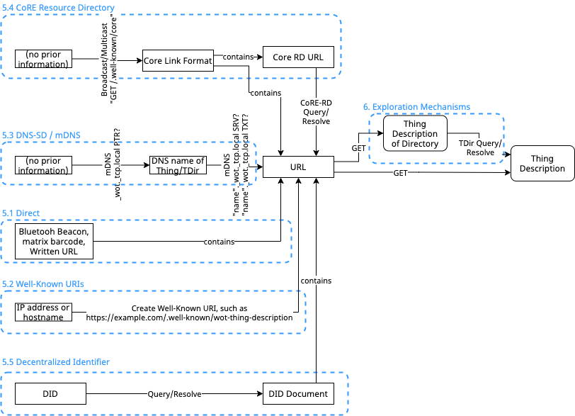
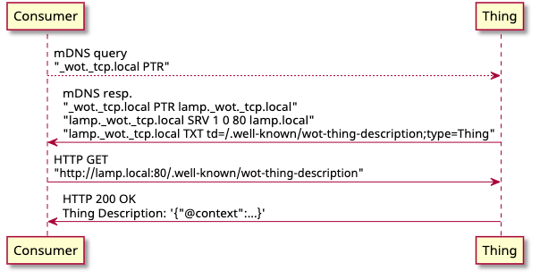
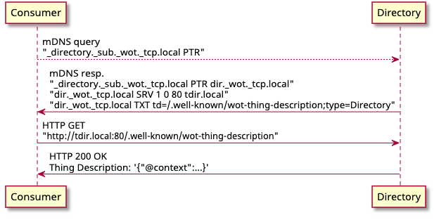

The W3C Web
of Things (WoT) is intended to enable interoperability across
IoT platforms and application domains. One key mechanism for
accomplishing this goal is the definition and use of metadata
describing the interactions an IoT device or service makes
available over the network at a suitable level of abstraction.
The WoT Thing Description specification satisfies this
objective.
However, in order to use a Thing its Thing Description first
has to be obtained. The WoT Discovery process
described in this document addresses this problem. WoT
Discovery needs to support the distribution of WoT Thing
Descriptions in a variety of use cases. This includes ad-hoc
and engineered systems; during development and at runtime; and
on both local and global networks. The process also needs to
work with existing discovery mechanisms, be secure, protect
private information, and be able to efficiently handle updates
to WoT Thing Descriptions and the dynamic and diverse nature of
the IoT ecosystem.
The WoT Discovery process is divided into two phases,
Introduction, and Exploration. The Introduction phase leverages
existing discovery mechanisms but does not directly expose
metadata; they are simply used to discover Exploration
services, which provide metadata but only after secure
authentication and authorization. This document normatively
defines two Exploration services, one for WoT Thing
self-description with a single WoT Thing Description and a
searchable WoT Thing Directory service for collections of Thing
Descriptions. A variety of Introduction services are also
described and where necessary normative definitions are given
to support them.
Status of This Document
This section describes the status of this document at
the time of its publication. Other documents may supersede this
document. A list of current W3C publications and the
latest revision of this technical report can be found in the
W3C technical reports
index at https://www.w3.org/TR/.
GitHub
Issues are preferred for discussion of this specification.
Alternatively, you can send comments to our mailing list.
Please send them to public-wot-wg@w3.org
(archives).
Publication as an Editor's Draft does not imply endorsement
by the W3C
Membership.
This is a draft document and may be updated, replaced or
obsoleted by other documents at any time. It is inappropriate
to cite this document as other than work in progress.
The Web of Things (WoT) defines an architecture that
supports the integration and use of web technologies with IoT
devices. The WoT Architecture [wot-architecture]
document defines the basic concepts and patterns of usage
supported. However, the WoT Thing Description [wot-thing-description]
is a key specification for WoT Discovery since it is the
purpose of WoT Discovery to make WoT Thing Descriptions
available. Specifically, WoT Discovery has to allow
authenticated and authorized entities (and only those entities)
to find WoT Thing Descriptions satisfying a set of criteria,
such as being near a certain location, or having certain
semantics, or containing certain interactions. Conversely, in
order to support security and privacy objectives, the WoT
Discovery process must not leak information to unauthorized
entities. This includes leaking information that a given entity
is requesting certain information, not just the information
distributed in the Thing Descriptions themselves.
There are already a number of discovery mechanisms defined,
so we have to establish why we are proposing a new one. First,
many existing discovery mechanisms have relatively weak
security and privacy protections. One of our objectives is to
establish a mechanism that not only uses best practices to
protect metadata, but that can be upgraded to support future
best practices as needed. Second, we are using discovery in a
broad sense to include both local and non-local mechanisms.
While a local mechanism might use a broadcast protocol,
non-local mechanisms might go beyond the current network
segment where broadcast is not scalable, and so a different
approach, such as a search service, is needed. Our approach is
to use existing mechanisms as needed to bootstrap into a more
general and secure metadata distribution system. Third, the
metadata we are distributing, the WoT Thing Description, is
highly structured and includes rich data such as data schemas
and semantic annotations. Existing discovery mechanisms based
on a list of simple key-value pairs are not appropriate. At the
same time, use of existing standards for semantic data query,
such as SPARQL [SPARQL11-OVERVIEW], while
potentially suitable for some advanced use cases, might require
to much effort for many anticipated IoT applications. Therefore
in order to address more basic applications, we also define
some simpler query mechanisms.
After defining some basic terminology, we will summarize the
basic use cases and requirements for WoT Discovery. These are a
subset of the more detailed and exhaustive use cases and
requirements presented in the WoT Use Cases [wot-usecases]
and WoT Architecture [wot-architecture]
documents. Then we will describe the basic architecture of the
WoT Discovery process, which uses a two-phase
Introduction/Exploration approach. The basic goal of this
architecture is to be able to use existing discovery standards
to bootstrap access to protected discovery services, but to
distribute detailed metadata only to authorized users, and to
also protect those making queries from eavesdroppers as much as
possible. We then describe details of specific Introduction and
Exploration mechanisms. In particular, we define in detail a
normative API for a WoT Thing Description Directory (WoT TDD)
service that provides a search mechanism for collections of WoT
Thing Descriptions that can be dynamically registered by Things
or entities acting on their behalf. The WoT Discovery mechanism
however also supports self-description by individual Things and
one issue we address is how to distinguish between these two
approaches. Finally, we discuss some security and privacy
considerations, including a set of potential risks and
mitigations.
2.
Conformance
As well as sections marked as non-normative, all authoring
guidelines, diagrams, examples, and notes in this specification
are non-normative. Everything else in this specification is
normative.
The key words MAY, MUST, OPTIONAL, and
SHOULD in this document are to be
interpreted as described in BCP 14 [RFC2119]
[RFC8174]
when, and only when, they appear in all capitals, as shown
here.
3.
Terminology
This section is non-normative.
The present document uses the terminology defined in the WoT
Architecture [wot-architecture]
document, and also the additional terms defined here. The WoT
prefix is used to avoid ambiguity for terms that are
(re)defined specifically for Web of Things concepts.
Anonymous TD
A Thing Description without an identifier
(id attribute).
Discovery
In the WoT context, the process of finding and retrieving
Thing metadata in the form of Thing Descriptions for Things
satisfying some criteria of interest.
Exploration
A discovery mechanism that provides access to detailed
metadata in the form of one or more Thing Descriptions.
Exploration mechanisms are in general protected by security
mechansism and are accessible only to authorized users.
Introduction
A "first contact" discovery mechanism, whose result is a
URL that references an exploration mechanism. Introduction
mechanisms themselves should not directly provide metadata,
and in general are designed to be open.
Thing Description
Directory (TDD)
A directory service with a prescribed API that allows the
registration, management, and search of a database of Thing
Descriptions. Note that the acronym should be TDD, not TD, to
avoid confusion with Thing Descriptions (TDs).
Partial TD
A data model partially conformant to the Thing
Description schema by including only a subset of the
attributes.
4.
Architecture
This section is non-normative.
Figure 1 shows an overview of discovery process.

Figure 1 Discovery process overview
Editor's note:
Discovery Architecture Overview
To do: an overview of the two-phase approach and
its purpose, which is to support controlled and authenticated
access to metadata by authorized users only.
5.
Introduction Mechanisms
This chapter describes a mechanism for discovering a Thing
or a Directory Service. The following mechanism is provided by
the Thing or the Directory Service so that Consumer can
discover the Thing Description or a URL that point to the Thing
Description.
5.1
Direct
Any mechanism that results in a single URL. This includes
Bluetooth beacons, QR codes, and written URLs to be typed by
a user. A GET on all such URLs MUST
result in a TD. For self-describing Things, this can be the
TD of the Thing itself. If the URL references a Directory,
this MUST be the TD of the Directory
service.
5.2
Well-Known URIs
A Thing or Directory Service MAY
use the Well-Known Uniform Resource Identifier
[RFC8615]
to advertise its presence. The Thing or Directory Service
registers its own Thing Description into the following path:
/.well-known/wot-thing-description.
When the HTTP GET access is made to the above path, the
HTTP server MUST return a Thing
Description with the content-type set to
application/td+json.
Editor's note:
Registration of Well-known URI
The service name in Well-Known URI
(wot-thing-description) is tentative.
"Well-Known URIs" registry and contents of registration
request is described in Section 3.1 of [RFC8615].
5.3 DNS-Based Service Discovery
A Thing or Directory Service MAY
use the DNS-Based Service Discovery (DNS-SD)[RFC6763]. This can
be also be used to discover them on the same link by
combining Multicast DNS (mDNS)[RFC6762].
In DNS-SD, format of the Service Instance Name is
Instance.Service.Domain. The Service part is a
pair of labels following the conventions of [RFC2782].
The first label has an underscore followed by the Service
Name, and the second label describes the protocol.
The Service Name to indicate the Thing or Directory
Service MUST be _wot.
And the Service Name to indicate the Directory Service
MUST be
_directory._sub._wot.
Editor's note:
Service Names in existing implementations
The Service Names _wot and
_directory._sub._wot are tentative. The
following Service Names are used in the existing
implementations: _wot,
_device._sub._wot,
_directory._sub._wot, _webthing.
To use a Service Name, registration to "Underscored and
Globally Scoped DNS Node Names" Registry [RFC8552]
is required.
In addition, the following information MUST be included in the TXT
record that is pointed to by the Service Instance Name:
td
Absolute pathname of the Thing Description of the Thing
or Directory Service.
type
Type of the Thing Description, i.e. Thing
or Directory. If omitted, the type is assumed
to be Thing.
Editor's note:
Usage of a TXT record in existing implementations
The following key/value pairs are used in the
existing implementations: retrieve: Absolute path name of the API to get
an array of Thing Description IDs from the Directory
Service. register: Absolute path name of the API to
register a Thing Description with the Directory
Service. path: The URI of the thing description on the
Web Thing's web server td: Prefix of Directory Service API tls: Value of 1 if the Web Thing supports
connections via HTTPS.
Figure 2 and
Figure 3 shows example sequences
of discovery of Thing and Directory Service using DNS-SD and
mDNS.

Figure 2 An example sequence of discovery of Thing
using DNS-SD and mDNS

Figure 3 An example sequence of discovery of Directory
Service using DNS-SD and mDNS
5.4 CoRE Link Format and CoRE
Resource Directory
A Thing or Directory Service MAY
advertise its presence using the Constrained RESTful
Environment (CoRE) Link Format [RFC6690].
And, a Thing or Directory Service MAY use the CoRE Resource Directory
[CoRE-RD] to register a
link to the Thing Description.
The endpoint type(et) of the Link that
targets the Thing Description of the Thing MUST be wot.thing. The endpoint
type of the Link that targets the Thing Description of the
Directory Service MUST be
wot.directory.
Editor's note
The endpoint types wot.thing and
wot.directory are tentative.
5.5 DID
Documents
A Thing or Directory Service MAY
advertise its presence using the Decentralized Identifier
(DID) [DID-CORE].
The DID Document obtained by resolving the DID of a Thing
or Directory Service MUST contains a
Service Endpoint which point to Thing Description of the
Thing or Directory Service.
Issue 65: Create typed links in
DID Documents for WoT Directories
DID
These should be consistent with a general model that we
should also use for similar things, i.e. CoRE-RD and
DNS-SD. We should discuss with DID the process for how to
document a link type for use in DID Documents.
6.
Exploration Mechanisms
Editor's note:
Exploration Mechanism Overview
To do: Description of supported explorations, and
requirements for new exploration mechanisms.
6.1
Self-description
Editor's note:
Self-Description Overview
To do: Describe mechanisms for devices to
self-describe, hosting their own TDs.
6.2
Directory
Editor's note:
Directory Overview
To do: Describe mechanisms for TDs to be hosted
in a searchable directory service.
A Directory can be distinguished from a Thing by the use
of an @type including the semantic term
Directory.
6.2.1 Information Model
Editor's note:
Directory Information Model
To Do: Formal definition of information
contained in a directory and its organization.
6.2.2 Directory Service API
The Directory APIs
must use secure protocols guaranteeing System
User Data authenticity and confidentiality (see
[WOT-SECURITY]).
The HTTP API
MUST be exposed over HTTPS (HTTP
Over TLS).
The HTTP API responses must use appropriate status codes
described in this section for success and error responses.
The
HTTP API MUST use the Problem
Details [RFC7807] format
to carry error details in HTTP client error (4xx) and
server error (5xx) responses. This enables both
machines and humans to know the high-level error class and
fine-grained details.
Editor's note:
WoT-specific error types
The Problem Details error type
field is a URI reference which could used to map the
occurred error to WoT-specific error class. There are few
open issues raising the lack of WoT-specific error types:
wot-discovery#44,
wot-thing-description#303, wot-scripting-api#200.
For now, type can be omitted which defaults
to "about:blank", and title should be set to
HTTP status text.
Below is a generic Thing Description for the Directory
HTTP API with OAuth2 security. The Thing Description alone
should not be considered as the full specification to
implement or interact with a directory. Additional details
for every interaction are described in human-readable form
in the subsequent sections.
Issue 82: Creation
of OpenAPI spec from Directory TD
Need to confirm if equivalent OpenAPI spec
can be easily created out of the TD in Example
2. If yes, a sentence may be added
indicating this possibility.
6.2.2.1 Registration
The Registration API is a RESTful HTTP API in
accordance with the recommendations defined in
[RFC7231]
and [REST-IOT].
The default
serialization format for all request and response bodies
MUST be JSON, with JSON-LD 1.1
[JSON-LD11] syntax to support
extensions and semantic processing.Directories
MAY accept additional
representations based on request's indicated Content-Type
or Content-Encoding, and provide additional
representations through server-driven content
negotiation.
The Registration API MUST provide create, retrieve, update,
delete (CRUD) interfaces.
The API needs to offer a mechanism to efficiently
query all TDs. The search API may offer the expected
functionality by searching for everything and adding
protocol-specific pagination arguments. However, that
is hardly RESTful. We could instead extend the
registration API to CRUDL, adding Listing operation.
The operations are described below:
TD Creation
The API MUST allow registration of a TD object
passed as request body.The request SHOULD contain
application/td+json Content-Type header
for JSON serialization of TD.The TD object SHOULD be validated syntactically
using the
Thing Description JSON Schema [WoT-Thing-Description].
A TD which is identified with an
id attribute MUST be handled differently with one
that has no identifier (Anonymous
TD). The create operations are specified
as createTD action in Example 2 and elaborated
below:
A TD MUST be submitted to the directory
using an HTTP PUT request at a
target location (HTTP path) containing the unique
TD id.Upon successful
processing, the server MUST respond with 201 (Created)
status.
Note: If the target location corresponds to an
existing TD, the request shall instead proceed as
an Update operation and respond the appropriate
status code (see Update section).
An Anonymous
TDMUST be submitted
to the directory using an HTTP POST
request.Upon successful
processing, the server MUST respond with 201 (Created)
status and a Location header containing a
system-generated identifier for the TD.
The identifier SHOULD be a
Version 4 UUID URN [RFC4122].
Error responses:
400 (Bad Request): Invalid serialization or TD.
This is accompanied by an appropriate response
message.
401 (Unauthorized): No authentication.
403 (Forbidden): Insufficient rights to the
resource.
Editor's note: Deduplication
The server should employ a mechanism to
eliminate duplication of TDs submitted with a
POST request. The spec need to have
recommendations on how to perform this.
TD Retrieval
A TD MUST
be retrieved from the directory using an HTTP
GET request, including the identifier of
the TD as part of the path.A
successful response MUST
have 200 (OK) status, contain
application/td+json Content-Type header,
and the requested TD in body. The retrieve
operation is specified as retrieveTD
property in Example 2.
Error responses:
404 (Not Found): TD with the given
id not found.
401 (Unauthorized): No authentication.
403 (Forbidden): Insufficient rights to the
resource.
TD Update
The API MUST allow modifications to existing
TDs as full replacement or partial updates.The request SHOULD contain
application/td+json Content-Type header
for JSON serialization of TD. The update
operations are described below:
A modified TD MUST replace an existing one when
submitted using an HTTP PUT request
to the location corresponding to the existing
TD.The TD object
SHOULD be validated
syntactically using the
Thing Description JSON Schema
[WoT-Thing-Description].Upon success, the server
MUST respond with 204
(No Content) status. This operation is
specified as updateTD property in
Example 2.
Note: If the target location does not
correspond to an existing TD, the request shall
instead proceed as a Create operation and respond
the appropriate status code (see Create section).
In other words, an HTTP PUT request
acts as a create or update operation. An HTTP
PATCH may be used for an update-only
operation.
An existing TD
MUST be partially
modified when the modified parts are submitted
using an HTTP PATCH request to the
location corresponding to the existing TD.The modified
parts MUST be in
Partial
TD form and conform to the original TD
structure.The input
MAY include other
existing parts of the TD or the whole TD
object. When the whole TD object is
provided as input, the operation acts as an
update-only action. After
applying the modifications, the TD object
SHOULD be validated
syntactically using the
Thing Description JSON Schema
[WoT-Thing-Description].Upon success, the
server MUST respond with
a 204 (No Content) status. This operation
is specified as updatePartialTD
property in Example 2.
Error responses:
400 (Bad Request): Invalid serialization or TD.
This is accompanied by an appropriate response
message.
404 (Not Found): TD with the given
id not found (for PATCH
only).
401 (Unauthorized): Rejecting a request without
appropriate authentication.
403 (Forbidden): Rejecting a request due to
insufficient rights to the resource.
TD Deletion
A TD MUST
be removed from the directory when an HTTP
DELETE request is submitted to the
location corresponding to the existing TD.A successful response
MUST have 204 (No Content)
status. The retrieve operation is specified as
deleteTD property in Example 2.
Error responses:
404 (Not Found): TD with the given
id not found.
401 (Unauthorized): No authentication.
403 (Forbidden): Insufficient rights to the
resource.
6.2.2.2 Management
Editor's note:
Management API
To do: Other administrative functions not
having to do with CRUD of individual records, for
example, security configuration. Also, administrator
roles may expand the capabilities of administrators for
management of records (for instance, the ability to
delete a record they did not create).
6.2.2.3 Notification
The Notification API is to notify clients about the
changes to Thing Descriptions maintained within the
directory. The Notification API MUST follow the Server-Sent Events
[EVENTSOURCE]
specifications to serve events to clients. In
particular, the server responds to successful requests
with 200 (OK) status and text/event-stream
Content Type. Re-connecting clients may continue from the
last event by providing the last event ID as
Last-Event-ID header value. This API is
specified as registration event in Example
2.
Event Types
The server MUST produce events for creation,
update, and deletion of Thing Descriptions represented
by created_td, updated_td,
deleted_td keywords
respectively.
Event Filtering
The API supports server-side filtering of events to
reduce resource consumption by delivering only the
events required by clients. The filtering is based on
query parameters passed to the server at connection
time. The filtering behavior is described below:
The server
MUST support event
filtering based on the event types passed as one or
more type query parameters. For
example, in response to query
?type=created_td&type=deleted_td,
the server must only deliver events of types
created_td and
deleted_td. At the absence of any
type query parameter, the server must
deliver all types of events.
The server
MUST support event
filtering based on the Thing Description identifier
passed as one or more td_id query
parameters. For example, the query
?type=updated_td&td_id=urn:example:1234
must result in updated_td events for
the TD identified with
urn:example:1234.
The server
MAY support event
filtering based on the search expressions passed as
one of jsonpath, xpath,
or sparql query parameters.If the
server does not support a given search query
parameter, it MUST reject
the request with 501 (Not Implemented)
status.
Event Data
The event data MUST contain the JSON serialization of
the event object. The event data object is
defined by the following rules:
The event data object
MUST at least include the
identifier of the TD created, updated, or deleted
at that event as value of td_id
field.
When
include_changes query parameter is set
to true, the create event data object
MAY include the created TD
as the value of created_td
field.
When
include_changes query parameter is set
to true, the update event data object
MAY include the updated
parts of the TD in Partial
TD form as the value of td_updates
field.
When a
server which does not support the inclusion of
changes inside event data object is requested with
a include_changes query parameter, it
MUST reject the request
with 501 (Not Implemented) status.
Editor's note:
SSE Authorization Header
Some early SSE implementations (including
HTML5 EventSource) do not allow setting custom headers
in the initial HTTP request. Authorization header is
required in few OAuth2 flows and passing it as a query
parameter is not
advised. There are polyfills for browsers and
modern libraries which allow setting Authorization
header.
6.2.2.4
Search
Editor's note:
Search API Overview
Sub-API to search a directory, e.g. issue a
query. There are different forms and levels of query
possible, for example, syntactic (JSONPath, XPath) vs.
semantic (SPARQL), and the more advanced query types
may not be supported by all directories. So this API
will have further subsections, some of which will be
optional. Search also includes a sub-API for managing
listing the contents (eg returned by a query) including
handling pagination, etc. Note that one special form of
query will be able to return everything. Results may be
subject to the requestor's authorization.
To discuss further: Federated queries to other TDDs,
Spatial and network-limited queries, Links
The Directory has three search APIs: syntactic
search with JSONPath [JSONPATH] or
XPath [xpath-31], and
semantic search with SPARQL [sparql11-overview].
The Directory MUST implement the syntactic search with
JSONPath.The Directory SHOULD implement the syntactic search with
XPath.The Directory MAY implement semantic search with
SPARQL.
6.2.2.4.1 Syntactic search:
JSONPath
The
API MUST allow searching TDs
using an HTTP GET request.The request MUST contain a valid JSONPath
[JSONPATH] as
searching parameter.A
successful response MUST have
200 (OK) status, contain application/json
Content-Type header, and in the body a set of complete
TDs or a set of TD fragments. The syntactic
search with JSONPath is specified as
searchJSONPath property in Example
2.
List of errors:
400 (Bad Request): JSONPath expression not
provided or contains syntax errors.
401 (Unauthorized): No authentication.
403 (Forbidden): Insufficient rights to the
resource.
The standardization of JSONPath expressions is in
progress by an independent working group.
6.2.2.4.2 Syntactic search:
XPath
The support for XPath Search
API is recommended. If implemented, the XPath
query API MUST allow searching
TDs using an HTTP GET request.The request MUST contain a valid XPath
[xpath-31] as
search parameter.A
successful response MUST have
200 (OK) status, contain application/json
Content-Type header, and in the body a set of complete
TDs or a set of TD fragments. The syntactic
search with XPath is specified as
searchXPath property in Example
2.
List of errors:
400 (Bad Request): XPath expression not provided
or contains syntax errors.
401 (Unauthorized): No authentication.
403 (Forbidden): Insufficient rights to the
resource.
501 (Not Implemented): XPath API not
supported.
6.2.2.4.3 Semantic search:
SPARQL
The support for SPARQL
Search API is optional. If implemented, the
SPARQL search API MUST allow
searching TDs using the SPARQL protocol
[sparql11-overview].The SPARQL API
MUST accept queries using HTTP
GET requests.The support for
SPARQL search using HTTP POST method is
OPTIONAL.UPDATE queries are out of the scope for
the API. A successful response
MUST have 200 (OK) status, and
depending on the type of query contain by default as
Content-Type header application/ld+json
for CONSTRUCT and DESCRIBE
queries or application/json for
SELECT or ASK. The response
body MAY contain TD fragments
or a set of TDs depending on the query. The
semantic search with SPARQL is specified as
searchSPARQL property in Example
2.
List of errors:
400 (Bad Request): SPARQL query not provided or
contains syntax errors.
401 (Unauthorized): No authentication.
403 (Forbidden): Insufficient rights to the
resource.
501 (Not Implemented): SPARQL API not
supported.
6.2.3 Security and Privacy
Editor's note:
Security Considerations Overview
Minimum security and privacy requirements for
confidentiality, authentication, access control, etc.
7. Security and Privacy Considerations
This section is non-normative.
Security and privacy are cross-cutting issues that need to
be considered in all WoT building blocks and WoT
implementations. This chapter summarizes some general issues
and guidelines to help preserve the security and privacy of
concrete WoT discovery implementations. For a more detailed and
complete analysis of security and privacy issues, see the
WoT Security and Privacy Guidelines specification
[WOT-SECURITY].
Editor's note:
Discovery Security and Privacy Concerns and
Mitigations
To do, some discussion of general security and
privacy concerns and mitigations. Note that the architecture
above is designed to address many such points, for example
the two-phase approach and "authorization before metadata
release" principles, so this would be a summary and a
recap.
A. Recent Specification Changes
Initial draft.
B.
Acknowledgments
Many thanks to the W3C staff and all other
active Participants of the W3C Web of Things Interest
Group (WoT IG) and Working Group (WoT WG) for their support,
technical input and suggestions that led to improvements to
this document.